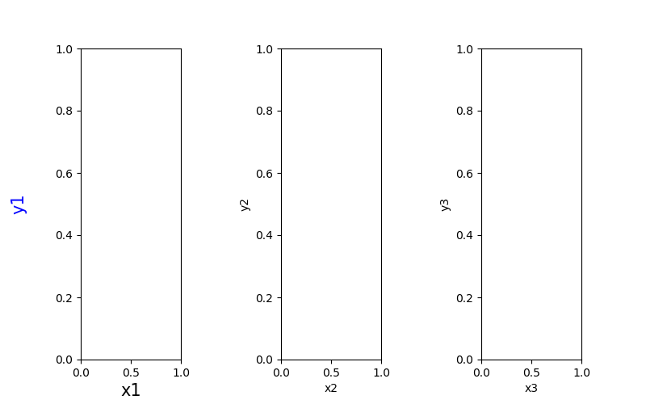
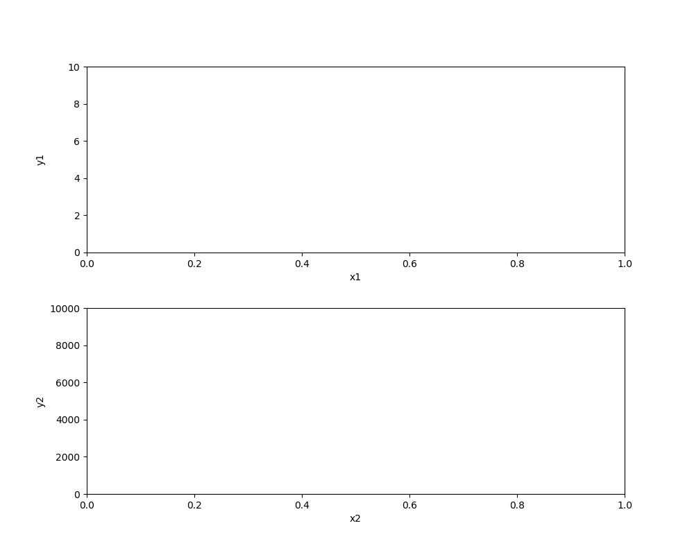
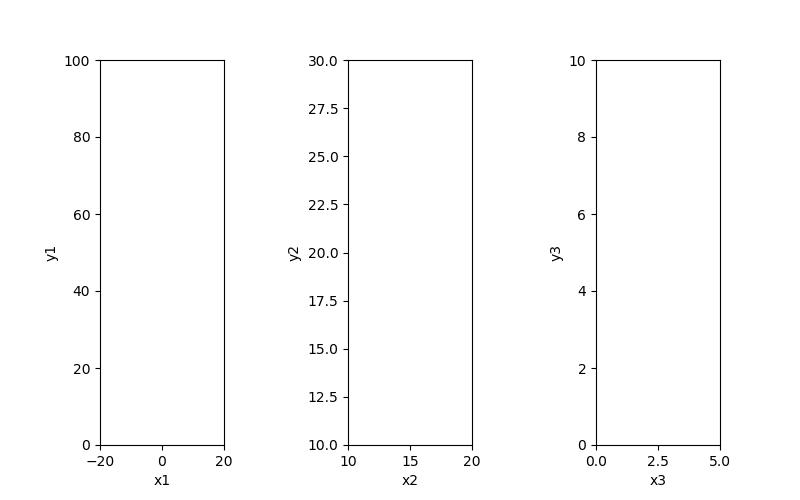
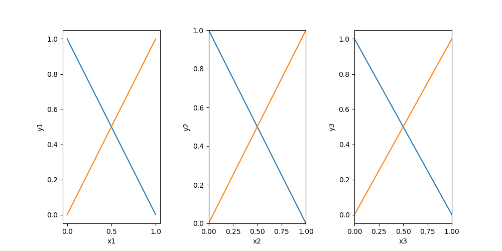
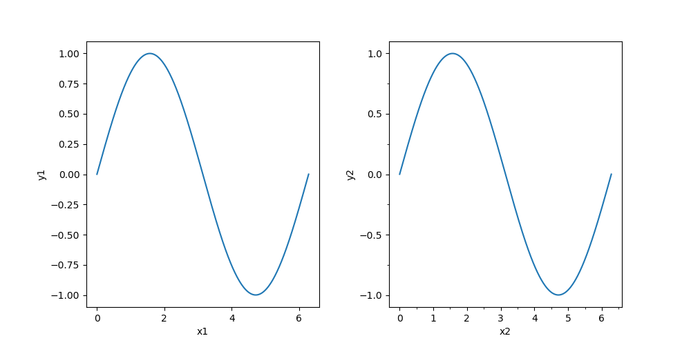
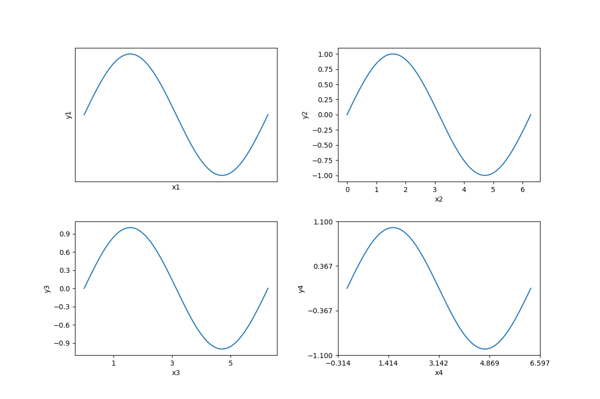
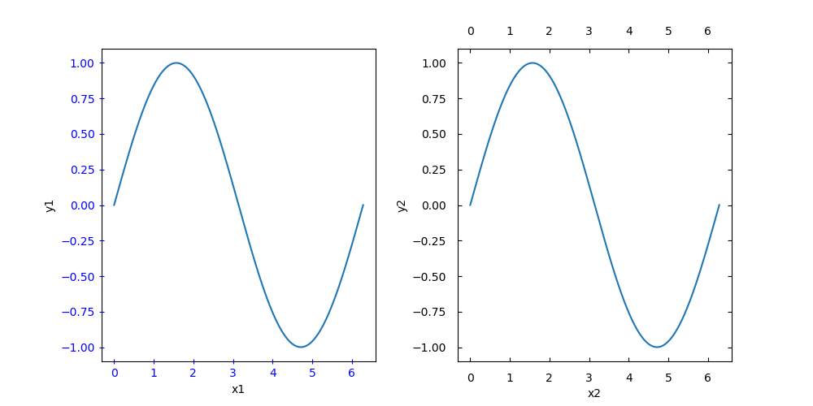

4. 軸の設定¶
4.1. 軸ラベル¶
4.1.1. 軸ラベルの設定¶
グラフの軸ラベルはAxes.set_xlabel() または Axes.set_ylabel() で設定する。この時文字列の設定のパラメータを用いて文字のスタイルを指定可能。
縦軸と横軸のラベル名を同時に設定する場合は Axes.set(xlabel='横軸ラベル名', ylabel='縦軸ラベル名') または Axes.update(dict(xlabel='横軸ラベル名', ylabel='縦軸ラベル名')) と一行で書ける。
なお、Axes作成時にxlabelとylabelを指定する方法もある。
軸ラベルの設定例(3パターン)
fig = plt.figure()
ax1 = fig.add_subplot(131)
ax1.set_xlabel('x1', fontsize=15, color='black')
ax1.set_ylabel('y1', labelpad=25, fontsize=15, color='blue')
ax2 = fig.add_subplot(132)
ax2.set(xlabel='x2', ylabel='y2')
ax3 = fig.add_subplot(133, xlabel='x3', ylabel='y3')

labelpad
軸とラベルの間隔。デフォルトはNone。
loc
軸ラベルの位置。デフォルトはcenter。
| loc | description |
|---|---|
| left | 左寄せ |
| center | 中央寄せ |
| right | 右寄せ |
4.1.2. 軸ラベルの位置揃え¶
複数のグラフの軸ラベルの位置を揃えるには fig.align_labels() を用いる。
軸ラベルを揃える例
fig = plt.figure()
fig.align_labels()
# 横軸ラベル・縦軸ラベルだけに設定
fig.align_xlabels()
fig.align_ylabels()
# 特定のグラフにのみ設定
fig.align_labels([ax1, ax2])

4.2. 軸の範囲¶
4.2.1. 最小値・最大値¶
軸の範囲(最小値・最大値)は Axes.set_xlim() または Axes.set_ylim() で設定する。引数には軸の最小値・最大値を渡す。
縦軸と横軸の最小値・最大値を同時に設定する場合は Axes.set(xlim=(left, right), ylim=(bottom, top)) と一行で書ける。
軸ラベルと同様に、Axes作成時にxlimとylimで指定することもできる。
軸範囲の設定例(3パターン)
ax1.set_xlim(-20, 20)
ax1.set_ylim(0, 100)
ax2.set(xlim=(10, 20), ylim=(10, 30))
#Axes作成時に設定
ax3 = fig.add_subplot(133, xlim=(0, 5), ylim=(0, 10))

4.2.2. 余白¶
最小値・最大値の設定をしていない、またはAxes.set_xlim(auto=True)、 Axes.set_ylim(auto=True) としている場合は、データの最小値・最大値から自動で軸の最小値・最大値が設定される。この時に軸の余白としてxmarginとymarginが利用される。
余白は(データの最大値 - データの最小値) * marginの値で与えられる。Axes作成時にxmarginとymarginを指定するか、 plt.margins() で指定する(デフォルトは0.05)。
余白の設定例
# デフォルト(margin=0.05)
ax1 = fig.add_subplot(131)
# margin=0
ax2 = fig.add_subplot(132, xmargin=0, ymargin=0)
# plt.marginsで指定(それぞれのグラフに対して適用される)
ax3 = fig.add_subplot(133)
plt.margins(0.08)
plt.margins(0, 0.05) # (xmargin, ymargin)

4.3. 目盛と目盛ラベル¶
軸の目盛には主目盛と補助目盛があり、主目盛には目盛ラベルがついている。
4.3.1. 目盛の間隔¶
軸の目盛は Axis.set_major_locator() (主目盛)または Axis.set_minor_locator() (補助目盛)にLocatorを渡すことで変更できる。デフォルトでは主目盛はAutoLocator、補助目盛はNullLocatorになっている。
目盛の間隔を変更するには matplotlib.ticker.MultipleLocater() を作成し、Locatorに渡す。
また、後述する**Axes.set_xticks()とAxes.set_yticks()**を用いると直接的な目盛ラベルの指定が可能であり、この方法でも主目盛の間隔を変更できる。
目盛間隔の設定例
# モジュールのインポート
import matplotlib as mpl
# 主目盛及び補助目盛の間隔を変更
ax1.xaxis.set_major_locator(mpl.ticker.MultipleLocator(2))
ax2.xaxis.set_minor_locator(mpl.ticker.MultipleLocator(0.5))
ax2.yaxis.set_major_locator(mpl.ticker.MultipleLocator(0.5))
ax2.yaxis.set_minor_locator(mpl.ticker.MultipleLocator(0.25))

Locator
mpl.ticker.XXXLocatorで作成できるLocatorの例。
| XXXLocator | description |
|---|---|
| NullLocator | 目盛なし(ラベルもなし) |
| AutoLocator | 自動で目盛を設定 |
| MultipleLocator | 特定の値の整数倍に目盛を設定 |
| IndexLocator | 等差数列の目盛を設定 |
| LinearLocator | 特定の個数だけ目盛を配置 |
import matplotlib as mpl
# NullLocator()
ax1.xaxis.set_major_locator(mpl.ticker.NullLocator())
ax1.yaxis.set_major_locator(mpl.ticker.NullLocator())
# ただしNullLocatorについては次のように指定する方が簡単
ax1.set_xticks([])
ax1.set_yticks([])
# AutoLocator()
ax2.xaxis.set_major_locator(mpl.ticker.AutoLocator())
ax2.yaxis.set_major_locator(mpl.ticker.AutoLocator())
# IndexLocator(base, offset)
# base * n + offset の位置に目盛を設定
ax3.xaxis.set_major_locator(mpl.ticker.IndexLocator(2, 1))
ax3.yaxis.set_major_locator(mpl.ticker.IndexLocator(0.3, 0.1))
# LinearLocator(numticks)
# グラフ最小値・最大値の間を numticks - 1 等分する位置に目盛を設定
ax4.xaxis.set_major_locator(mpl.ticker.LinearLocator(5))
ax4.yaxis.set_major_locator(mpl.ticker.LinearLocator(4))

4.3.2. 詳細設定¶
目盛と目盛ラベルの詳細設定は Axes.tick_params() を指定して行う。
目盛の詳細設定例
ax1.tick_params(direction='inout', length=5, colors='blue')
ax2.tick_params(axis='x', direction='in', pad=10, top=True, bottom=True, labelbottom=True, labeltop=True)
ax2.tick_params(axis='y', direction='in', pad=10, left=True, right=True, labelleft=True)

axis
目盛を設定する軸。デフォルトはboth。
| axis | description |
|---|---|
| x | x軸 |
| y | y軸 |
| both | 両軸 |
which
主目盛と補助目盛の選択。デフォルトはmajor。
| which | description |
|---|---|
| major | 主目盛 |
| minor | 補助目盛 |
| both | 両目盛 |
direction
目盛の方向。デフォルトはout。
| direction | description |
|---|---|
| in | 内側 |
| out | 外側 |
| inout | 両側 |
length
目盛の長さ。
width
目盛の幅。
color
目盛の色。
pad
目盛と目盛ラベルの距離。
labelsize
目盛ラベルのサイズ。
labelcolor
目盛ラベルの色。
colors
目盛と目盛ラベルの色(同時に変更)。
bottom 、 top 、 left 、 right
目盛の表示。bool型で指定。
labelbottom 、 labeltop 、 labelleft 、 labelright
目盛ラベルの表示。bool型で指定。
4.3.3. 目盛ラベルの上書き¶
目盛ラベルの間隔を Axes.set_xticks() または Axes.set_yticks() を用いて設定すると、直接的な目盛ラベルの指定ができる。引数には設定したい目盛ラベルのリストを渡す。
さらに、指定した目盛ラベルのリストに対して Axes.set_xticklabels() または Axes.set_yticklabels() を適用すると、指定した引数のリストを用いて目盛ラベルの上書きをすることができる。
目盛ラベルの上書き例